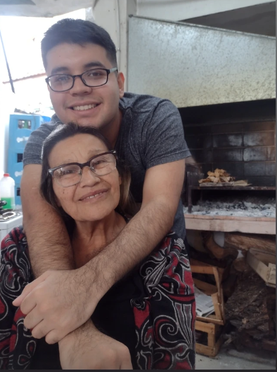

Soy Tomas Miño, tengo 23 años y futuro lic. en desarrollo de videojuegos,actualmente estoy trabajando como personal de limpieza para poder estudiar y terminar esta carrera y lograr ser un licenciado en este rubro tengo conocimientos saludos basicos en c++, Python, JavaScript entre otros lenguajes de programacion, soy fanatico de los juegos de mesa, cartas, ajedrez, lo cual me inspira mucho a la hora de crear o inspirarme a la hora de crear videojuegos desde lo mas simple, hasta lo mas complejo por el momento me descato mucho en el game desing, que es la documentacion a la hora de crear proyectos ya sean de mecanicas, seguimiento del codigo de programacion, descripcio del arte que debe seguir el equipo de arte
Mi objetivo es desarrollarme como diseñador de videojuegos, creando experiencias innovadoras y entretenidas para los jugadores. Me interesa especializarme en game design, enfocándome en el desarrollo de mecánicas, sistemas de juego y documentación de proyectos, mientras continúo perfeccionando mis habilidades técnicas y creativas para crecer dentro de la industria. Al mismo tiempo tambien espero poder desarrollar todas mis habilidades de programacion, arte, animacion entre otras ramas que trabaje durante la carrera y... 
GARY SAL DE AQUI ESTOY TRABAJANDO